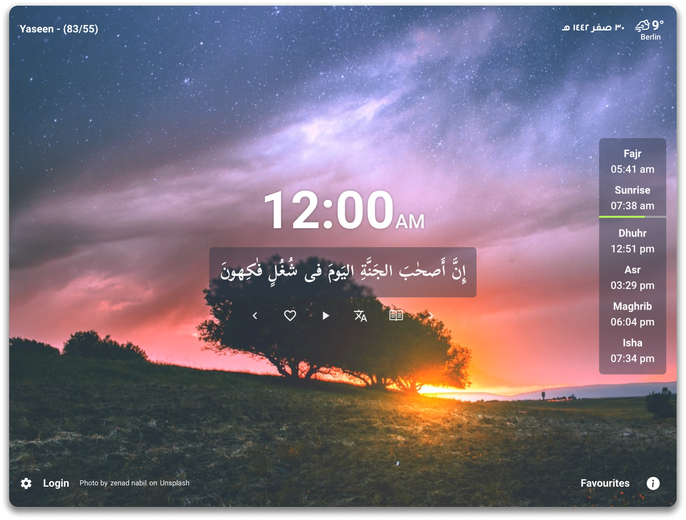

Get closer to the Holy Quran
A Chrome extension that replaces your new tab with a random ayah from the Quran. It keeps you inspired by a verse from the Quran every time you open a new tab.


+15 Translations
Quran Tab supports more than 15 translations of the Quran. You can choose your favorite translation from the settings page. You can also choose to show the translation or not. It's all up to you.
Track What’s New
Quran Tab keeps you updated with the latest features and updates. You can check the changelog from the settings page, What's New tab.

Fully English support
Quran Tab is fully translated into English. You can choose your preferred language from the settings page between English and Arabic and it will be applied to the whole extension and be saved for you.